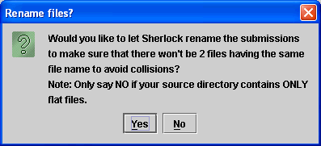

The first step in using Sherlock to detect natural language plagiarism is to assemble all the work into a single directory. This directory can contain sub-folders, a suggested layout would be a single folder for each student or one 'flat' directory containing one file from each student.
The pieces of work must be in a plain-text format, Sherlock will not work with Word documents, post-script or other formatted files. The software will work with HTML formatted text but no attempt will be made to remove the HTML tags at this time.
When Sherlock starts you will be presented with the following screen:
The Main Sherlock Screen
Pressing the "Choose Source Directory..." button will get you started. In the dialog box that appears, navigate to the directory containing the student submissions and press "OK" when that directory is highlighted. Sherlock will now use that directory for all its detection work.
Directory Chosen
Now that Sherlock has a directory to work from the real work of plagiarism detection can begin. Press the "Start Complete Search..." button, this will present you with the following dialog:
You must answer yes to the question but it will not do anything to the files in the directory unless you have previously run Sherlock in that directory. The program will delete all directories used for old results, but in the case of a directory that has not been used no action will be carried out.
Next you will see the following screen:
Detection Settings
This screen allows you to configure options for the detection itself. A detailed descriptin of the settings available can be found elsewhere in the documentation. To get started, make sure that only the "Original" and "Comments Only(sentence)" boxes have ticks. Click any other ticks that appear so that they go away.
Clicking on the "Comments Only(sentence)" tab at the top will present this screen:
Most users will not need to adjust the default settings. You may wish to add some words which will be common in the submissions. Words that are very common are not useful in detecting plagiarism and therefore words on this list will be ignored. It is probably advisable to leave this at its default setting as filtering more than the default words can mean less accurate end results.
When you are ready, press OK to begin plagiarism detection. The program will ask you two questions:

The safe option here is to answer Yes, however if you are sure that every file name in the directory is unique from all the others then press No.
Answer Yes to this question. Answering No will produce the same results but the detection will take slightly longer as Sherlock will also try treating the file as if it were a source-code assignment.
After this, detection will begin! The detection process may take some time to complete, depending on the number of assignments and their size. The program will attempt to estimate how long the process will take. As a rule, detecting plagiarism among natural language assignments is about three or four times slower than detecting plagiarism among equivalent sized source-code submissions. This is due to the more complex nature of a spoken language compared to a computer programming language.